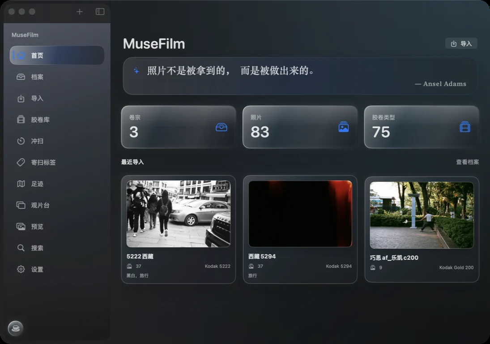
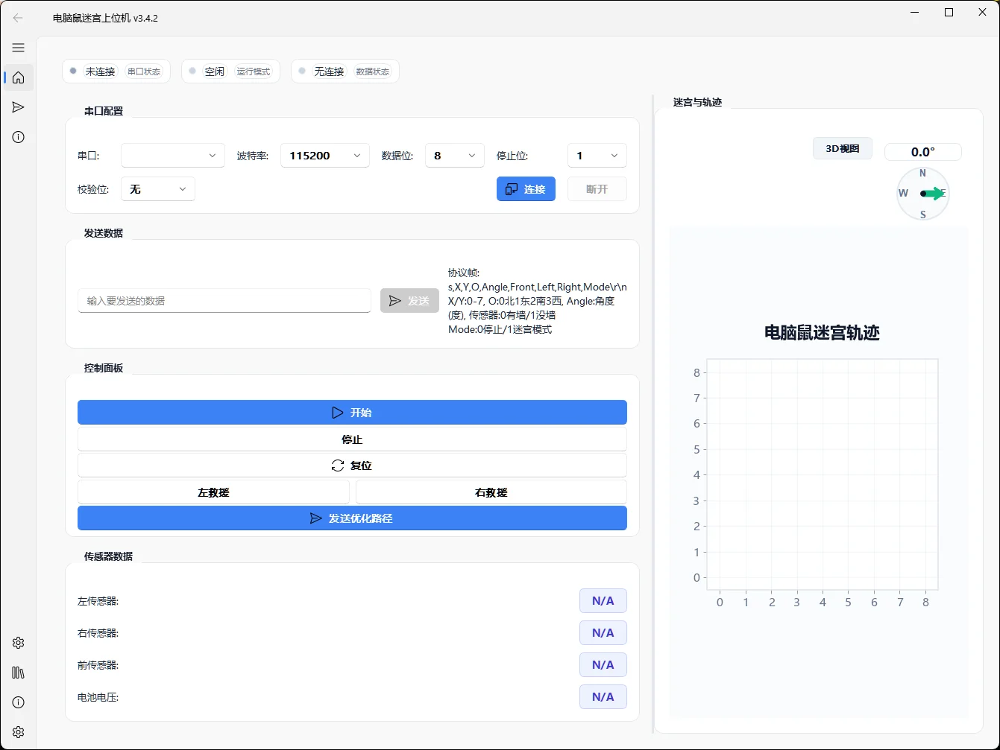
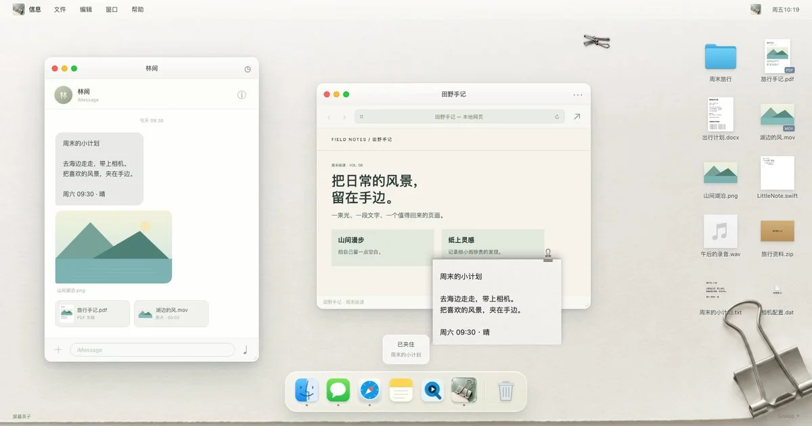
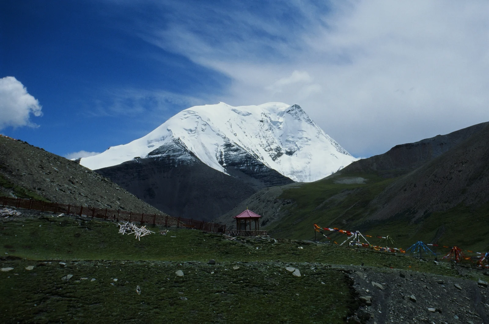

PHOTOGRAPHY / DESKTOP01 / 04

探索项目 ↗让每一卷光，有迹可循。
从胶卷归档到数字观片台，把底片、器材与拍摄记忆放回同一个语境。
从一个实际问题出发，
做值得反复打开的软件。

探索项目 ↗从胶卷归档到数字观片台，把底片、器材与拍摄记忆放回同一个语境。

探索项目 ↗连接电脑鼠与屏幕：实时轨迹、传感器监控、迷宫重建与路径回放。
从 Word 导入到实时 PDF 预览，让封面填写、格式整理和文档导出自然衔接。

探索项目 ↗把图片、文字、文件和链接夹在屏幕边缘。用熟悉的材质与动作，连接桌面上的工作。
更多开源工具，
以及尚在生长的实验。
OCT / 显微图像孔洞检测、测量与可视化
由自然语言生成流程图的桌面工作台
批量发票检查、OCR 与报销账单汇总
把幻灯片截图重建为可编辑 PowerPoint
扫描负片的自动反相处理实验
苏州大学研究生毕业论文 LaTeX 模板
基于 HS1101 传感器的呼吸频率检测
影像相关的早期 Web 实验

KODAK 5294 / KAROLA — FROM MUSEFILM我是 Quartz，喜欢把复杂的工作流变成顺手的工具。
从 Python 桌面软件到原生 macOS 应用，从计算机视觉到嵌入式系统，关注工具与人的接触方式。摄影则提醒我：细节和留白，同样重要。